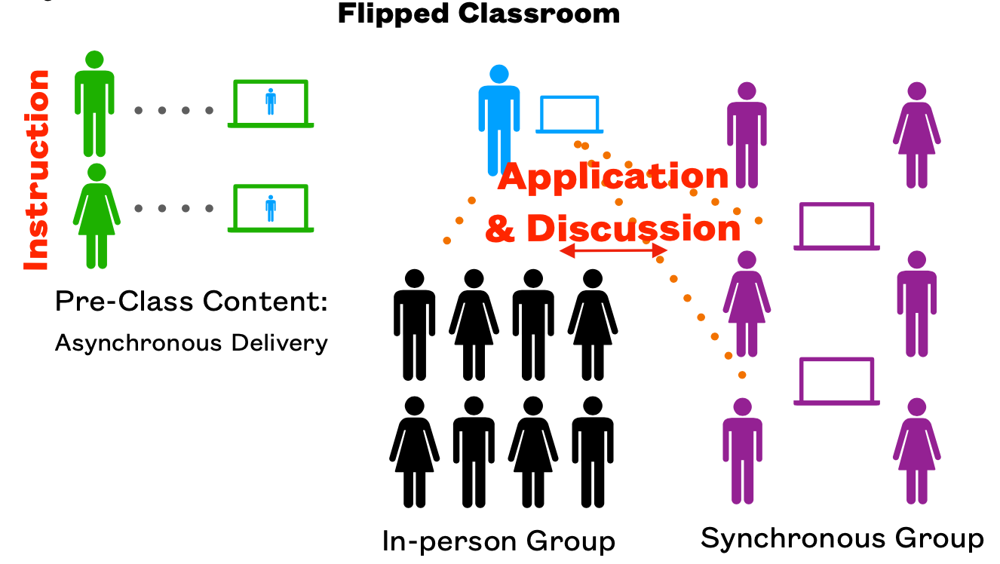

David A. Sykes, Ph.D.
TR 1:00-2:20 P.M. in Olin 213
MWF 1:30-3:30 P.M.
TR 8:30-9:20 A.M., 2:30-3:30 P.M.
Or by appointment or happenstance.
This course covers how to create web pages using HTML and CSS. You will learn how to construct websites using widely accepted organization of resources. You will learn how to use a content management system to build a website without having to code each individual page. You will learn how to transfer files over a network. By the end of the semester you will have built your own website and published it on a web server.
At the end of the semester, my objectives are for you to:
Learning Web Design: A Beginner's Guide to HTML, CSS, JavaScript, and Web Graphics, 5th edition, by Jennifer Niederst Robbins. ISBN-13: 978-1491960202.
We will use three websites regularly:
Piazza. Piazza will host announcements, descriptions of homework assignments, handouts, and discussions about class topics and projects. You need to create a free account. Use your Wofford email address for the account. If a question about anything related to the course arises, post it at Piazza. A nice thing about Piazza is that any of us can answer a question. If you can help a student, please do! Much of the learning I have done arose from helping other people to figure out how to do something or solve a problem.
Note: You may post or respond to a post anonymously. Be aware that your post will be anonymous to classmates but not to me.
Moodle. You will submit some assignments in Moodle. Your grades will be recorded in Moodle.
Note: The cumulative grade shown in Moodle should reflect your final weighted score under Method #1 [see below]. Occasionally, the complexity of the Moodle grade book setup will confound me and I might set it up incorrectly. If you notice a problem, please let me know and I will correct it.
Mimir Classroom. You will submit projects, complete homework exercises, and take tests in Mimir Classroom. You can even use it to code your web pages. You need to create a free account. Use your Wofford email address for the account.
You will need a computer in order to work on assignments and access the websites we will use. A laptop computer that you can bring to class is ideal. The computer needs a web browser and needs to be able to run a file transfer application that lets you copy files from your computer to a web server (computer).
We will use other applications, too, including the ones listed below. These must run on your computer. All of them are free to download, install, and use.
We will use FileZilla to transfer files to/from a web server.
Note: Wait for instructions before downloading FileZilla. Some of the installers contain bloatware that you probably do not want to install.
Your grade for the course will be based on a weighted average of scores for homework, projects, exams, and a personal website (semester-long project). The usual grading scale applies: 93–100: A, 90–92: A-, 87–89: B+, 83–86: B, 80–82: B-, 77–79: C+, 73–76: C, 70–72: C-, 60–69: D, 0–59: F.
A final average will be calculated using two methods that apply weightings shown in the table. The higher of the two calculated values will be mapped to a letter grade. Under Method #2, homework scores, project scores, and exam scores do not factor into the calculation.
| Component | Weight | |
|---|---|---|
| Method #1 | Method #2 | |
| Homework | 20% | 0% |
| Projects | 25% | 0% |
| Personal site | 15% | 40% |
| Exams | 30% | 0% |
| Final exam | 10% | 60% |
| TOTAL | 100% | 100% |
Homework is designed to help you to be prepared for class and will be assigned regularly.
I encourage you to work on written homework assignments with other students in the class. You may use any resources that are useful to you to complete homework assignments. If you’re still struggling with a homework problem, post a question about it at Piazza.
Two exams will be used to assess your understanding of the concepts covered in this course.
Exams will be given asynchronously in Mimir. You will have one hour to complete the exam (possibly more if you have an accommodation). You may use the textbook and your own notes while taking the exam, but you may not use any other resources or assistance from another person.
Projects give you practical experience building web pages and websites. Some projects will involve a single web page. Others can involve multiple pages. Most projects involve coding and will be completed as a Mimir Web Project.
You will build a personal website over the course of the semester. A few weeks into the semester, you will submit a proposal (wireframes and a sitemap). You will work on your site during the semester, updating content and presentation as we cover more topics. During the last week of classes you will prepare a 3-to-5-minute video walking me through the website and addressing specific questions about your site and how you developed it. The video will be viewed only by me.
The final exam will cover all of the topics we covered during the semester.
This class will run in accordance with a Blended Synchronous (Flipped Classroom). You will be expected to prepare for a class meeting by performing a variety of tasks, including:

You will be in one of three groups: A, B, or C. Groups A and B will attend class in-person one day a week and attend class remotely one day a week. Students in Group C will work fully remotely. Students in all groups should work synchronously unless there are extenuating circumstances.
During class meetings, in-person and remote students will work together in small teams to solve problems. That way in-person students can grab my attention to address issues.
Social distancing allows only half of the students to be in our classroom at one time. The first day of class will be completely remote. On the first day we will determine whether you are in Group A or Group B. Group C has already been set up. Some of you might join Group C temporarily if necessary. Note: I might revise group assignments during the semester.
Students in Group A will attend “in person” each Thursday and attend remotely each Tuesday. Students in Group B will attend “in person” each Tuesday and attend remotely each Thursday. The class on November 19, the last Thursday before Thanksgiving break, will be 100% remote.
We will use Zoom to support remote access. The links for class meetings and for office hours will be available in Piazza and Moodle. Those will be posted in Moodle and in Piazza. You will need to have a Zoom account and log in to join the class meeting. Portions of every class meeting will be recorded and made available online. The videos for a class meeting will be available in a Piazza post for that class.
Wearing a mask covering nose and mouth in the classroom is mandatory. A facemask is not a substitute for social distancing. Do not modify the seating arrangement in the classroom.
Please evaluate your own health regularly. Do not attend class or other on-campus events if you are not feeing well. Seek appropriate medical attention for treatment of illness. A doctor's note concerning absences is not required.
You are expected to attend class sessions either in-person or remotely. The General Policy Regarding Attendance in the Wofford College Student Handbook makes you responsible for catching up on missed classes.
Class participation and active learning are important aspects of this class, so your engagement is critical to your success. However, I understand that sometimes you must miss examinations or other academic obligations affecting your grades because of illness, personal crises, and other emergencies. As long as such absences are not excessive (beyond two weeks of classes), I will work with you as best I can to help you succeed in the course. Contact me as soon as possible when such absences arise so we can make arrangements to get you caught up. This policy will not apply in the case on non-emergency absences.
If you will miss class on an “in person” day,
please post without any details (anonymously if you prefer) a follow-up
message to my Piazza post about the class
and tag your post with
open-seat so that a student in the
other group can occupy your seat in the classroom.
If you are in the other group and would like that seat
then be the first to post in Piazza a claim for it.
If you will miss a class on a “remote” day, then let me know as soon as you can.
The final exam period is scheduled for 2:00-5:00 P.M. on Tuesday, December 8, 2020. You will take the final exam online in Mimir. You must complete the exam in the time allotted.
When attending class in person or remotely, you should dedicate your full attention to class activities. When attending in person, take notes and keep your laptop and other devices put away until we need them. When attending remotely, keep your video on and take notes. Give a holler if you have a question.
You must meet project deadlines. To submit a project late, you must contact me at least a day before the deadline to get an extension. Let me know how much more time you need. I will still expect you to submit the work you have completed so far even if you receive an extension.
Note: Any code you submit that contains syntax errors will receive a score of zero.
Post questions and comments about this course at Piazza. Feel free to respond to a question or to edit a response to a question. We are all learning together.
All questions about the course, including about projects, must be posted at the Piazza Q&A page. If you send me a question via email or via private post that should be posted publicly at Piazza, my reply will direct you to post your question publicly.
Do not post working code at Piazza. Do not include in a response either “fixed” code or a detailed description of how to change code to get it to work. It is okay to post non-working code.
I usually respond to email messages sent Sunday through Thursday within 24 hours—longer when sent on a Friday or a Saturday. I usually respond much sooner to Piazza posts since I have the Piazza app on my phone and receive notifications.
You can send me email messages for private matters, such as letting me know you will be absent or that you'd like to schedule a meeting. However, I prefer that you post a private message via Piazza.
Note: Anonymous Piazza posts are anonymous to classmates but not to me.
Review Netiquette before our second class meeting and do your best to follow the guidelines listed.
The Honor Code requires faculty, staff, and students to maintain a high standard of individual honor and integrity. Work represented as your own must be your own.
I encourage you to collaborate with others in the class—that is, help or get help from others. However, you may not write code for another student or provide code to copy. Doing any of these things is a violation Honor Code.
What is the distinction between collaboration and cheating?
During collaboration,
Ultimately, you must implement a solution to the problem yourself.
For some projects, you might be allowed to work with other students in the class. In this case, you are allowed to share all your work with your teammates. However, you are expected to do all of the work together. One student should not work without the others contributing.
Don’t cheat because you are up against a deadline. Start each assignment as soon as it is given. If you run into a glitch:
If you need accommodations, go to the Student tab in myWofford and investigate the Request Accommodations channel. I’ll make every effort to work with you.
We will work through the Robbins book up through Chapter 15. Then we will investigate WordPress.
The schedule is subject to change.
| Week | Topics |
|---|---|
| 31 AUG | Getting started |
| 07 SEP | How the web works + “Big concepts” |
| 14 SEP | HTML: basics. |
| 21 SEP | HTML: links and images |
| 28 SEP | HTML: tables and embedded video |
| 05 OCT | CSS: overview |
| 12 OCT | CSS: formatting text |
| 19 OCT | CSS: colors and backgrounds |
| 26 OCT | CSS: the box model and positioning |
| 02 NOV | CSS: responsive web design |
| 09 NOV | WordPress: basics and themes |
| 16 NOV | WordPress: content |
| 23 NOV | Thanksgiving break |
| 30 NOV | Wrap-up |
| 07 DEC | Final exam: Tuesday, December 8 2:00pm-5:00pm |